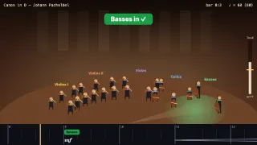
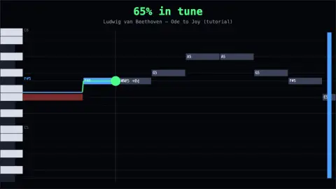

Conduct a sampled orchestra (Pachelbel, Beethoven, Strauss, Grieg): your beat sets the tempo, its size the dynamics; cue each section on its entry.

Play the theremin repertoire Clara Rockmore made famous: tilt for pitch, twist to fade, wobble for vibrato; stay in tune with the scrolling melody.
Needs a MUGIC in BLE output mode (firmware ≥ 2.2.0) and Chrome or Edge on a computer or Android (iPhone/iPad browsers have no Web Bluetooth). Also plays with the keyboard.